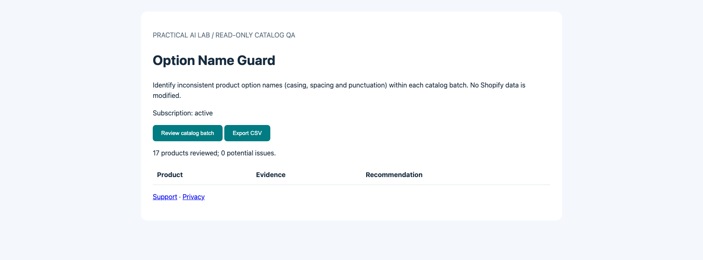

Shopify App Store · Requirement 1.2.1 resolution evidence
PAL Option Name Guard
Verified November 6, 2026 in an authenticated Shopify development store.
Billing issue resolved
Shopify previously reported that the merchant could not select a subscription before running the catalog audit. The embedded app now provides a Choose or manage Shopify plan action when no plan is active. This action opens the app's own Shopify-hosted App Pricing page.
Shopify App Pricing is enabled in the Partner Dashboard. The Standard public plan is USD $5.99 every 30 days with a 7-day free trial. Plan selection and approval use Shopify, not an external payment processor.
The app's billing-status endpoint checks the authenticated merchant's Shopify subscription state. The catalog audit is enabled only for an active subscription.
Real development-store verification
| Check | Observed result |
|---|---|
| Plan activation | Shopify's development-store test subscription was approved at effective USD $0. No actual charge was made. |
| Subscription check | Embedded app displayed Subscription: active; /api/billing-status returned HTTP 200. |
| Core feature | Read-only product-option audit succeeded: 17 products reviewed, 0 potential issues. /api/scan returned HTTP 200. |
| Merchant data | Audit is read-only and does not change products or product options. |
Actual Shopify embedded-app screenshot

How the reviewer can reproduce
- Install PAL Option Name Guard in an authorized development store and launch it inside Shopify Admin.
- Without a subscription, select the app's Shopify plan action and open Shopify's pricing page. The exact Shopify app handle is
pal-option-name-guard. - Select Standard, approve the subscription on Shopify's secure page, and return to the app. Shopify development stores can perform a USD $0 test subscription.
- Verify Subscription: active; choose Review catalog batch; inspect findings and optionally export CSV.
These are verified development-store results, not a claim of live paid billing, Shopify approval, or publication.